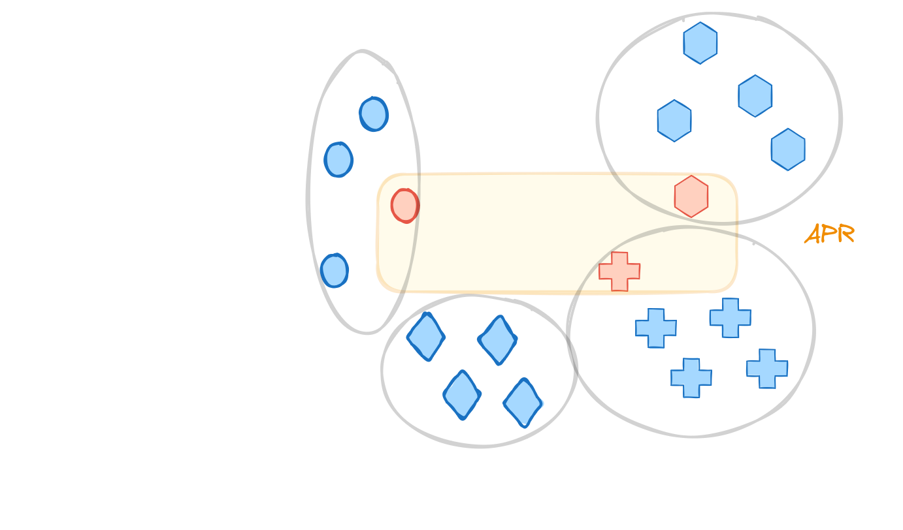

Multiple instances learning
Molecules or materials are dynamic. At realistic temperatures, there will always be an ensemble of different conformers. In addition, we typically do not deal with pure materials but more commonly with blends for which the exact structure is not known.
Multiple instances learning (MIL) is a framework that allows us to make predictions for such systems. For example, by thinking of molecules as bags of conformers or materials as bags of components of a blend.
Often, practioners already use without explicitly naming it. An overview over applications in chemistry can be found in Zankov et al.
The idea behind multiple instances learning
At its core, MIL is a variant of supervised learning that handles data grouped into bags, each containing multiple instances. In the context of chemical prediction, a “bag” might represent a single chemical compound, and the “instances” within could be different conformations, representations, or features of that compound. The distinctive aspect of MIL is that it assigns labels to bags, not to the individual instances they contain, making it particularly suited to scenarios where precise instance-level labels are hard to obtain or define.
It was formalized 1997 by a team around Thomas G. Dietterich with the goal of better drug-activity predictions.

Approaches to MIL
There are different ways to perform MIL: At the instance-level or the bag-level
Instance-level MIL
The perhaps conceptually simplest way to perform MIL is to make a prediction for each instance and then aggregate the predictions.

Conceptually, this is quite similar to Behler-Parinello Neural Networks. Here, we decompose a target, such as the energy, into atomic contributions and then make predictions for atomic energies and then add those up.

Bag-level MIL
Alternatively, one might obtain a representation for each instance and then make predictions based on aggregated representations. Note that this is not different from what we typically do in a graph-neural network: We obtain a representation for each atom using, for example, graph convolutions, then aggregate those (e.g. by taking the mean) abnd then perform the prediction over the full molecule (the bag). Also the fingerprint averaging methods for copolymers or polymer blends proposed by Shukla et al. can be seen as special case of MIL.

If we use a more learnable pooling mechanism (e.g. attention-based), we can also attempt to find out what the most important instances are. This is known as key-instance detection.

Specialized algorithms
Set comparisons based
Solving the MIL problem boils down to comparing sets. And there are various similarity measures for comparing set, which can then be implemented in distance-based algorithms such as SVM or kNN.
A common metric is the Haussdorff distance. In this metric
\[ d_{\text {Hausdorff }}\left(B_1, B_2\right)=\max \left(\operatorname {max } _ { b _ { i } \in B _ { 1 } } \left(\min _{b_j \in B_2}\left(d\left(b_i, b_j\right)\right), \max _{b_i \in B_2}\left(\min _{b_j \in B_1}\left(d\left(b_i, b_j\right)\right)\right)\right.\right. \] where \(d\) is a distancve over the feature space of an instance \(b\) in a bag \(B\). Essentially, the Haussdorff distance is the distance of the point from one set that is furthest away from any point in the other set, considering both directions. This ensures that the Hausdorff Distance captures the worst-case scenario — the greatest of all the distances from a point in one set to the closest point in the other set.
Diettrich’s original algorithm: Axis Parallel Rectangles (APRS)
The idea is to learn a “concept” in feature space as axis-parallel rectangle $$$ in which there is - at least one instance from each positive example - exclude all instances from negative examples
the prediction is then positive if a new \(x\) is in the rectangle
\[ f(x, R) = \begin{cases} 1 & x \in R \\ 0 & \text{else} \end{cases} \]

In the original article there are different algorithms for growing those rectangles. One rough implementation might look as follows:
- Initialization: Choose a seed positive instance to start constructing the APR.
- Grow APR: find the smallest APR that covers at least one instance of every positive molecule (i.e. bag). One can implement it greedly to add until there is at least one instance from every positive molecule. For addition, we choose the molecule that would lead to the smallest growth of the APR. This is run over a set of possible features.
- Select Discriminating Features
- Evaluate each feature for its ability to exclude negative instances while including positive ones.
- Select features that provide the best discrimination between positive and negative instances.
- Expand APR: The APR with the steps above is often too tight: “It is typically so tight that it excludes most positive instances in the test set”. Those, one can
- Apply kernel density estimation on each selected feature to determine the optimal expansion of the APR bounds.
- Adjust bounds to ensure a high probability of covering new positive instances and excluding negatives.
- Iterate: Alternate between selecting discriminating features and expanding the APR until the process converges on a stable set of features and APR bounds.